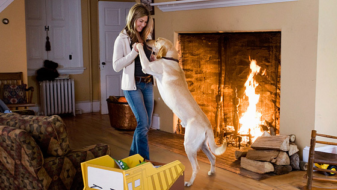
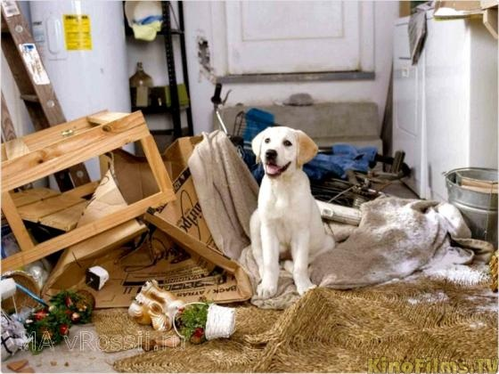

Самая добрая порода собак-Лабрадор!
Лабрадор не даст вам отдохнуть, это очень активная, жизнерадостная и любопытная собака. Когда вы вернетесь домой лабрадор обязательно будет вас радостно встречать ,лично у меня есть лабрадор и вы не поверите, она радуется каждому моему возвращению домой, как будто мы не виделись целую вечность!

Но вы не расслабляйтесь, лабрадор не любит скучать, с ним надо гулять, играть и даже общаться, да-да вы не ослышались, лабрадор любит общение хоть это-собака но если ее приучить к некоторым словам, то со временем собака начинает их понимать.
"Не суй свой нос в чужой вопрос"- это не про лабрадоров, они постоянно что-то нюхают и куда-то лезут .Если вы коллекционер обуви, не покупайте лабрадоров, в малом возрасте(5-7 месяцев) они с удовольствием сгрызут всю вашу обувь.
Лабрадоры очень умная порода собак, они могут запомнить время, когда вы обычно возвращаетесь с работы или института и если вы хоть на час задержитесь, они точно сделают вам какую -то мелкую пакость!

Но у лабрадоров также есть и хорошие черты, если вы например в депрессии или грустите, лабрадор придумает как вас развеселить. Данная порода собак хорошо дрессируется и может использоваться в охотничьих и военных целях. Если вы задумываетесь насчет покупки лабрадора, мое мнение однозначно - покупайте !!!!!!
Автор: Логачев Артём Григорьевичь
Дата публикации: 22.04.2020
123
.